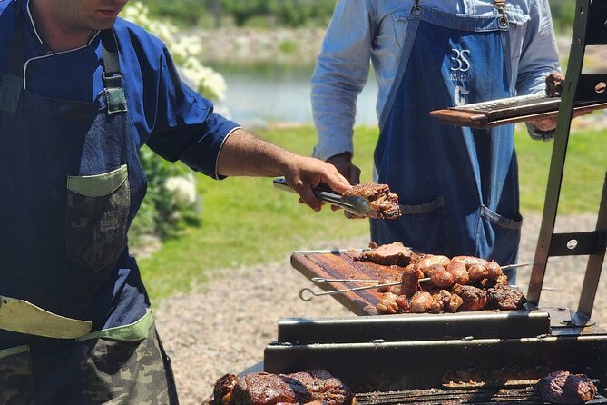

A Argentina é um paraíso gastronômico, onde os sabores intensos e as tradições culinárias se misturam para criar pratos irresistíveis. Da carne grelhada aos doces tentadores, a culinária argentina é uma verdadeira festa para o paladar. Conheça os pratos que fazem sucesso no país e se prepare para uma experiência gastronômica inesquecível!
Pratos Principais
Asado (Churrasco Argentino)
O asado é muito mais do que uma refeição na Argentina: é um ritual. Feito com cortes nobres de carne bovina, como costela, vazio e chorizo (linguiça), o churrasco argentino é preparado lentamente na grelha, resultando em uma carne suculenta e cheia de sabor. Acompanhado de chimichurri (um molho à base de ervas, alho e vinagre), o asado é uma experiência obrigatória para qualquer visitante.

Asado
Empanadas
As empanadas são uma iguaria presente em toda a Argentina, mas cada região tem sua versão única. Recheadas com carne, frango, queijo ou vegetais, elas são assadas ou fritas até ficarem douradas e crocantes. Em províncias como Salta, as empanadas são levemente apimentadas, enquanto em outras regiões podem ser mais suaves.
Empanadas
Choripan
O choripan é um clássico da culinária argentina, perfeito para quem quer um lanche rápido e saboroso. Ele consiste em uma linguiça grelhada (chorizo) servida dentro de um pão crocante, geralmente acompanhada de chimichurri ou molho de tomate. Popular em churrascos e estádios de futebol, o choripan é uma combinação simples, mas irresistível, que conquista tanto locais quanto turistas.
Choripan
Doces e Sobremesas
Dulce de Leche
O Dulce de leche é uma paixão nacional na Argentina. Feito com leite e açúcar, ele é cremoso e adocicado, perfeito para ser consumido puro, em bolos, biscoitos ou até mesmo no famoso "alfajor", um doce recheado com doce de leche e coberto com chocolate.
Dulce de Leche
Alfajor
O alfajor é um dos doces mais icônicos da Argentina. Consiste em duas camadas de biscoito macio, recheadas com doce de leite e cobertas com chocolate ou açúcar de confeiteiro. Existem diversas variações, desde as mais simples até as gourmet, com recheios de frutas ou nozes.
Alfajor
Bebidas Típicas
Vinhos de Mendoza
A Argentina é um dos maiores produtores de vinho do mundo, e a região de Mendoza é o coração da viticultura do país. Os vinhos Malbec, produzidos com uvas cultivadas no sopé da Cordilheira dos Andes, são famosos por sua intensidade e complexidade.
Mate
O mate é muito mais do que uma bebida: é um símbolo cultural. Preparado com erva-mate e água quente, ele é compartilhado entre amigos e familiares em um ritual que reforça os laços sociais.
Dicas Gastronômicas
Experimente um "parrillada": Um prato que reúne diversos cortes de carne grelhada, perfeito para compartilhar.
Visite uma "heladería": As sorveterias argentinas são famosas por seus sabores cremosos e variados, como o de doce de leche e dulce de batata.
Prove os vinhos: Não deixe de visitar uma vinícola em Mendoza ou degustar um Malbec em um restaurante local.